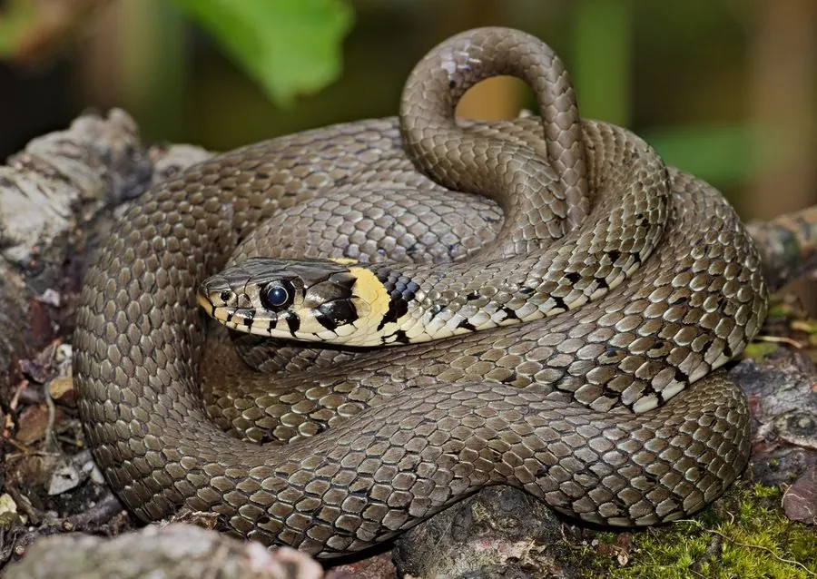

爬行动物 · 动物界
草蛇 Natrix natrix

欧洲常见的大型无毒蛇，体侧有黄色斑块，善游泳、常在水边活动，受惊时会装死躲避天敌，也是欧洲湿地常见的蛇类。
- 分类
- 门脊索动物门纲爬行纲目有鳞目科游蛇科属水游蛇属
- 栖息环境
- 河流、湖泊、沼泽、草地与潮湿的林缘
- 地理分布
- 欧洲大部分地区及亚洲北部
- 保护级别
- IUCN 无危（LC）；非中国原产，在中国无保护级别
物种志
草蛇体长 1–1.5 米，个别可达 2 米，身体细长，头部呈椭圆形，眼睛较大；体色从橄榄绿、灰褐到深色都有，头部两侧眼后各有一块明显的黄色或白色月牙形斑块，这是它最醒目的识别特征，背部有时分布黑色斑点或横纹。
它分布于欧洲和亚洲北部的河流、湖泊、沼泽与草地，善游泳，常在水边活动，白天捕食蛙类、蟾蜍、鱼类和小型哺乳动物。它是卵生蛇类，雌蛇在腐殖质堆中产卵 10–30 枚，靠堆肥温度孵化。草蛇无毒，受到威胁时会先发出嘶声、排出臭味，甚至翻过身装死；它对控制蛙类和鼠类数量有一定作用，目前被列为无危物种，是非中国原产的欧洲常见蛇类。
形态与习性
- 食性蛙类、蟾蜍、鱼类和小型哺乳动物
- 体长1–1.5 m，最长约 2 m
- 寿命约 15–20 年
- 繁殖卵生，10–30 枚，靠堆肥温度孵化
- 活动节律昼行性，善游泳
- 毒性无毒，对人无害
趣味知识
- 草蛇头部两侧的黄色月牙形斑块，是它最醒目的识别特征。
- 受惊时它会排出臭味并翻过身装死，以此躲避捕食者。
- 草蛇善游泳，常在池塘和沼泽边捕食蛙类。